mysql是一种关系型数据库（RDB、RMDBS）。
数据库类型¶
关系型数据库（RMDBS）¶
数据库中表与表的数据之间存在某种关联的内在关系，因为这种关系，所以我们称这种数据库为关系型数据库。
典型：Mysql/MariaDB、postgreSQL、Oracle、SQLServer、DB2、Access、SQLlite3
特点：
- 全部使用SQL（结构化查询语言）进行数据库操作。
- 都存在主外键关系，表，等等关系特征。
- 大部分都支持各种关系型的数据库的特性：存储过程、触发器、视图、临时表、模式、函数
非关系型数据库（NoSQL）¶
NOSQL：not only sql，泛指非关系型数据库。
泛指那些不使用SQL语句进行数据操作的数据库，所有数据库中只要不使用SQL语句的都是非关系型数据库。
典型：Redis、MongoDB、hbase、 Hadoop、elasticsearch、图形数据库。。。。
特点：
- 每一款都不一样。用途不一致，功能不一致，各有各的操作方式。
- 基本不支持主外键关系，也没有事务的概念。（MongoDB号称最接近关系型数据库的，所以MongoDB有这些的。）
redis¶
Redis（Remote Dictionary Server ，远程字典服务） 是一个高性能的key-value数据格式的内存数据库，是NoSQL数据库。redis的出现主要是为了替代早起的Memcache缓存系统的。 内存型(数据存放在内存中)的非关系型(nosql)key-value(键值存储)数据库， 支持数据的持久化(基于RDB和AOF，注: 数据持久化时将数据存放到文件中，每次启动redis之后会先将文 件中数据加载到内存)，经常用来做缓存、数据共享、购物车、消息队列、计数器、限流等。(最基本的就是缓存一些经常用到的数据，提高读写速度)。
redis的官方只提供了linux版本的redis，window系统的redis是微软团队根据官方的linux版本高仿的。
官方原版: https://redis.io/
中文官网:http://www.redis.cn
3.1 redis下载和安装¶
下载地址： https://github.com/MicrosoftArchive/redis/releases
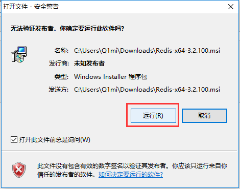
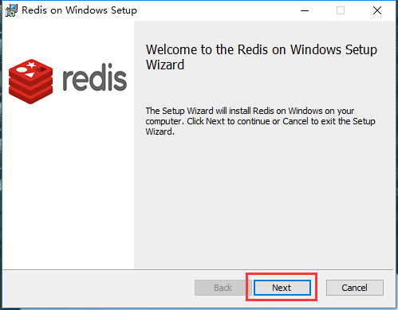
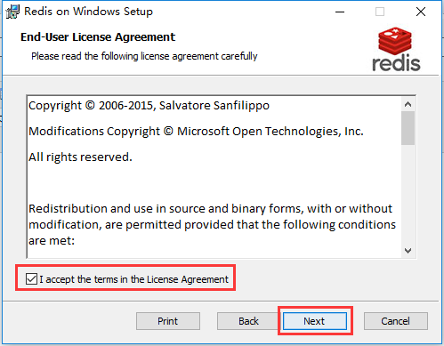
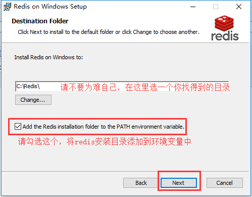
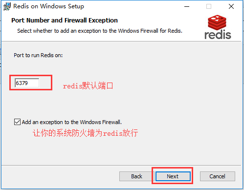
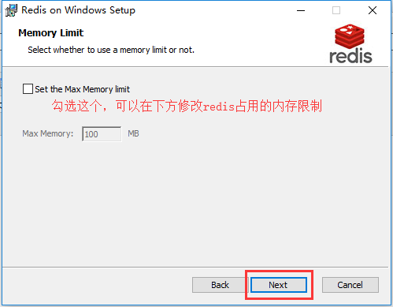
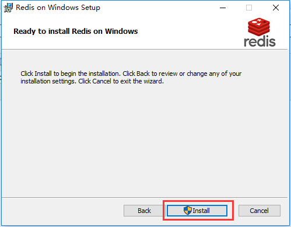
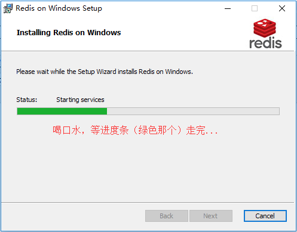
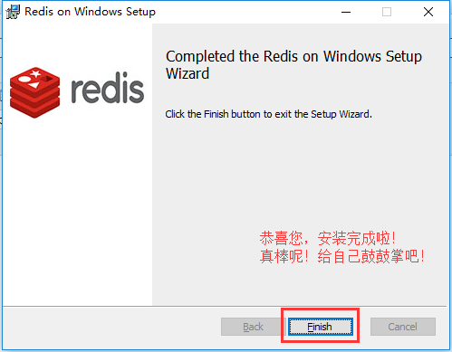
使用以下命令启动redis服务端
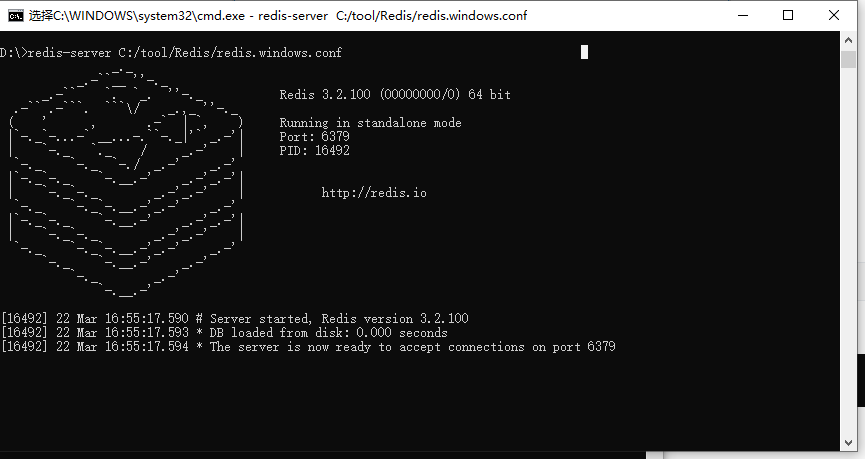
关闭上面这个cmd窗口就关闭redis服务器服务了。
redis作为windows服务启动方式
启动服务：redis-server --service-start 停止服务：redis-server --service-stop
ubuntu下安装：
安装命令：sudo apt-get install -y redis-server
卸载命令：sudo apt-get purge --auto-remove redis-server
关闭命令：sudo service redis-server stop
开启命令：sudo service redis-server start
重启命令：sudo service redis-server restart
配置文件：/etc/redis/redis.conf
3.2 redis的配置¶
redis 安装成功以后,window下的配置文件保存在软件 安装目录下,如果是mac或者linux,则默认安装/etc/redis/redis.conf
3.2.1 redis的核心配置选项¶
绑定ip：如果需要远程访问，可将此注释，或绑定1个真实ip
端⼝，默认为6379
是否以守护进程运行 [windows下需要设置]
- 如果以守护进程运行，则不会在命令阻塞，类似于服务
- 如果以守护进程运行，则当前终端被阻塞
- 设置为yes表示守护进程，设置为no表示⾮守护进程
- 推荐设置为yes
RDB持久化的备份文件
RDB持久化数据库数据文件的所在目录
日志文件所载目录
进程ID文件
数据库，默认有16个，数据名是不能自定义的，只能是0-15之间，当然这个15是数据库数量-1
redis的登录密码，生产阶段打开，开发阶段避免麻烦，一般都是注释的。
注意：开启了以后，redis-cli终端下使用 auth 密码来认证登录。
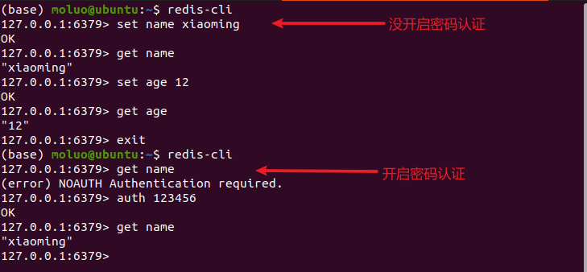
AOF持久化的开启配置项
AOF持久化的备份文件
AOF持久化备份的频率[时间]
一主二从三哨兵
3.2.2 Redis的使用¶
redis是一款基于CS架构的数据库，所以redis有客户端redis-cli，也有服务端redis-server。
其中，客户端可以使用python等编程语言，也可以终端下使用命令行工具管理redis数据库，甚至可以安装一些别人开发的界面工具，例如：RDM。

redis-cli客户端连接服务器：
3.3 redis数据类型¶
redis就是一个全局的大字典，key就是数据的唯一标识符。根据key对应的值不同，可以划分成5个基本数据类型。
1. string类型:
字符串类型，是 Redis 中最为基础的数据存储类型，它在 Redis 中是二进制安全的，也就是byte类型。
单个数据的最大容量是512M。
key: 值
2. hash类型:
哈希类型，用于存储对象/字典，对象/字典的结构为键值对。key、域、值的类型都为string。域在同一个hash中是唯一的。
key:{
域（属性）: 值，
域:值，
域:值，
域:值，
...
}
3. list类型:
列表类型，它的子成员类型为string。
key: [ 值1，值2, 值3..... ]
4. set类型:
无序集合，它的子成员类型为string类型，元素唯一不重复，没有修改操作。
key: {值1, 值4, 值3, ...., 值5}
5. zset类型(sortedSet):
有序集合，它的子成员值的类型为string类型，元素唯一不重复，没有修改操作。权重值1从小到大排列。
key: {
值1 权重值1(数字);
值2 权重值2;
值3 权重值3;
值4 权重值4;
}
redis中的所有数据操作，如果设置的键不存在则为添加，如果设置的键已经存在则修改
3.4 string¶
设置键值¶
set 设置的数据没有额外操作时，是不会过期的。
设置键为name值为xiaoming的数据

设置一个键，当键不存在时才能设置成功，用于一个变量只能被设置一次的情况。
一般用于给数据加锁
127.0.0.1:6379> setnx goods_1 101
(integer) 1
127.0.0.1:6379> setnx goods_1 102
(integer) 0 # 表示设置不成功
127.0.0.1:6379> del goods_1
(integer) 1
127.0.0.1:6379> setnx goods_1 102
(integer) 1
设置键值的过期时间¶
redis中可以对一切的数据进行设置有效期。
以秒为单位
设置键为name值为xiaoming过期时间为20秒的数据
关于设置保存数据的有效期¶
setex 添加保存数据到redis，同时设置有效期，格式：
设置多个键值¶
例3：设置键为a1值为python、键为a2值为java、键为a3值为c
字符串拼接值¶
向键为a1中拼接值haha
根据键获取值¶
根据键获取值，如果不存在此键则返回nil，相当于python的None
获取键name的值
根据多个键获取多个值
获取键a1、a2、a3的值
自增自减¶
set id 1
incr id # 相当于id+1
get id # 2
incr id # 相当于id+1
get id # 3
set goods_id_1 10
decr goods_id_1 # 相当于 id-1
get goods_id_1 # 8
decr goods_id_1 # 相当于id-1
get goods_id_1 # 8
获取字符串的长度¶
比特流操作¶
签到、记录
BITCOUNT # 统计字符串被设置为1的bit数.
BITPOS # 返回字符串里面第一个被设置为1或者0的bit位。
SETBIT # 设置一个bit数据的值
GETBIT # 获取一个bit数据的值
SETBIT mykey 7 1
# 00000001
getbit mykey 7
# 00000001
SETBIT mykey 4 1
# 00001001
SETBIT mykey 15 1
# 0000100100000001
BITCOUNT mykey
# 3
BITPOS mykey 1
# 4
3.5 key操作¶
redis中所有的数据都是通过key（键）来进行操作，这里我们学习一下关于任何数据类型都通用的命令。
查找键¶
参数支持简单的正则表达式
查看所有键
例子：
判断键是否存在¶
如果存在返回1，不存在返回0
判断键title是否存在
查看键的数据类型¶
查看键的值类型
type a1
# string
sadd member_list xiaoming xiaohong xiaobai
# (integer) 3
type member_list
# set
hset user_1 name xiaobai age 17 sex 1
# (integer) 3
type user_1
# hash
lpush brothers zhangfei guangyu liubei xiaohei
# (integer) 4
type brothers
# list
zadd achievements 61 xiaoming 62 xiaohong 83 xiaobai 78 xiaohei 87 xiaohui 99 xiaolong
# (integer) 6
type achievements
# zset
删除键以及键对应的值¶
查看键的有效期¶
设置key的有效期¶
给已有的数据重新设置有效期，redis中所有的数据都可以通过expire来设置它的有效期。有效期到了，数据就被删除。
清空所有key¶
慎用，一旦执行，则redis所有数据库0~15的全部key都会被清除
key重命名¶
把name重命名为username
select切换数据库
操作效果：
# 默认处于0号库
127.0.0.1:6379> select 1
OK
# 这是在1号库
127.0.0.1:6379[1]> set name xiaoming
OK
127.0.0.1:6379[1]> select 2
OK
# 这是在2号库
127.0.0.1:6379[2]> set name xiaohei
OK
auth认证
在配置中，如果配置了requirepass登录密码，则进入redis-cli的操作数据之前，必须要进行登录认证。
注意：在redis6.0以后，redis新增了用户名和密码登录，可以选择使用，也可以选择不适用，默认关闭的。
在redis6.0以前，redis只可以在配置文件中，可以选择开启密码认证，也可以关闭密码认证，默认关闭的。
redis-cli
127.0.0.1:6379> auth <密码>
OK # 认证通过
3.6 hash¶
专门用于结构化的数据信息。
结构：
设置指定键的属性/域¶
设置指定键的单个属性
设置键 user_1的属性name为xiaoming
127.0.0.1:6379> hset user_1 name xiaoming # user_1没有会自动创建
(integer) 1
127.0.0.1:6379> hset user_1 name xiaohei # user_1中重复的属性会被修改
(integer) 0
127.0.0.1:6379> hset user_1 age 16 # user_1中重复的属性会被新增
(integer) 1
127.0.0.1:6379> hset user:1 name xiaohui # user:1会在redis界面操作中以:作为目录分隔符
(integer) 1
127.0.0.1:6379> hset user:1 age 15
(integer) 1
127.0.0.1:6379> hset user:2 name xiaohong age 16 # 一次性添加或修改多个属性
设置指定键的多个属性[hmset已经慢慢淘汰了，hset就可以实现多个属性]
设置键user_1的属性name为xiaohong、属性age为17，属性sex为1
获取指定键的域/属性的值¶
获取指定键所有的域/属性
获取键user的所有域/属性
127.0.0.1:6379> hkeys user:2
1) "name"
2) "age"
127.0.0.1:6379> hkeys user:3
1) "name"
2) "age"
3) "sex"
获取指定键的单个域/属性的值
获取键user:3属性name的值
获取指定键的多个域/属性的值
获取键user:2属性name、age的值
获取指定键的所有值
获取指定键的所有域值对
删除指定键的域/属性¶
删除键user:3的属性sex/age/name，当键中的hash数据没有任何属性，则当前键会被redis删除
判断指定属性/域是否存在于当前键对应的hash中¶
判断user:2中是否存在age属性
127.0.0.1:6379> hexists user:3 age
(integer) 0
127.0.0.1:6379> hexists user:2 age
(integer) 1
127.0.0.1:6379>
属性值自增自减¶
给user:2的age属性在原值基础上+/-10，然后在age现有值的基础上-2
# 按指定数值自增
127.0.0.1:6379> hincrby user:2 age 10
(integer) 77
127.0.0.1:6379> hincrby user:2 age 10
(integer) 87
# 按指定数值自减
127.0.0.1:6379> hincrby user:2 age -10
(integer) 77
127.0.0.1:6379> hincrby user:2 age -10
3.7 list¶
队列、
列表的子成员类型为string
添加子成员¶
# 在左侧(前)添加一条或多条数据
lpush key value1 value2 ...
# 在右侧(后)添加一条或多条数据
rpush key value1 value2 ...
# 在指定元素的左边(前)/右边（后）插入一个或多个数据
linsert key before 指定元素 value1 value2 ....
linsert key after 指定元素 value1 value2 ....
从键为brother的列表左侧添加一个或多个数据liubei、guanyu、zhangfei
lpush brother liubei
# [liubei]
lpush brother guanyu zhangfei xiaoming
# [xiaoming,zhangfei,guanyu,liubei]
从键为brother的列表右侧添加一个或多个数据，xiaohong,xiaobai,xiaohui
rpush brother xiaohong
# [xiaoming,zhangfei,guanyu,liubei,xiaohong]
rpush brother xiaobai xiaohui
# [xiaoming,zhangfei,guanyu,liubei,xiaohong,xiaobai,xiaohui]
从key=brother，key=xiaohong的列表位置左侧添加一个数据，xiaoA,xiaoB
linsert brother before xiaohong xiaoA
# [xiaoming,zhangfei,guanyu,liubei,xiaoA,xiaohong,xiaobai,xiaohui]
linsert brother before xiaohong xiaoB
# [xiaoming,zhangfei,guanyu,liubei,xiaoA,xiaoB,xiaohong,xiaobai,xiaohui]
从key=brother，key=xiaohong的列表位置右侧添加一个数据，xiaoC,xiaoD
linsert brother after xiaohong xiaoC
# [xiaoming,zhangfei,guanyu,liubei,xiaoA,xiaohong,xiaoC,xiaobai,xiaohui]
linsert brother after xiaohong xiaoD
# [xiaoming,zhangfei,guanyu,liubei,xiaoA,xiaohong,xiaoD,xiaoC,xiaobai,xiaohui]
注意：当列表如果存在多个成员值一致的情况下，默认只识别第一个。
127.0.0.1:6379> linsert brother before xiaoA xiaohong
# [xiaoming,zhangfei,guanyu,liubei,xiaohong,xiaoA,xiaohong,xiaoD,xiaoC,xiaobai,xiaohui]
127.0.0.1:6379> linsert brother before xiaohong xiaoE
# [xiaoming,zhangfei,guanyu,liubei,xiaoE,xiaohong,xiaoA,xiaohong,xiaoD,xiaoC,xiaobai,xiaohui]
127.0.0.1:6379> linsert brother after xiaohong xiaoF
# [xiaoming,zhangfei,guanyu,liubei,xiaoE,xiaohong,xiaoF,xiaoA,xiaohong,xiaoD,xiaoC,xiaobai,xiaohui]
设置指定索引位置成员的值¶
修改键为brother的列表中下标为4的元素值为xiaohongmao
删除指定成员¶
lrem key count value
# 注意：
# count表示删除的数量，value表示要删除的成员。该命令默认表示将列表从左侧前count个value的元素移除
# count==0，表示删除列表所有值为value的成员
# count >0，表示删除列表左侧开始的前count个value成员
# count <0，表示删除列表右侧开始的前count个value成员
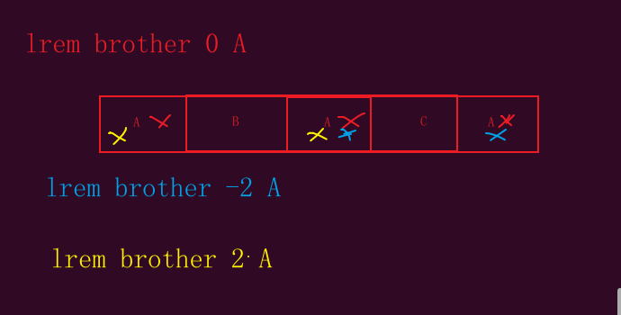
获取列表成员¶
根据指定的索引获取成员的值
获取brother下标为2以及-2的成员
移除并获取列表的第一个成员或最后一个成员
获取并移除brother中的第一个成员
获取列表的切片¶
闭区间[包括stop]
操作：
获取列表的长度¶
获取brother列表的成员个数
3.8 set¶
无序集合，重点就是去重和无序。
添加元素¶
向键authors的集合中添加元素zhangsan、lisi、wangwu
获取集合的所有的成员¶
获取键authors的集合中所有元素
获取集合的长度¶
获取s2集合的长度
随机获取一个或多个元素¶
随机获取s2集合的成员
删除指定元素¶
删除键authors的集合中元素wangwu
交集、差集和并集¶
sinter key1 key2 key3 .... # 比较多个集合中共同存在的成员
sdiff key1 key2 key3 .... # 比较多个集合中不同的成员
sunion key1 key2 key3 .... # 合并所有集合的成员，并去重
sadd user:1 1 2 3 4 # user:1 = {1,2,3,4}
sadd user:2 1 3 4 5 # user:2 = {1,3,4,5}
sadd user:3 1 3 5 6 # user:3 = {1,3,5,6}
sadd user:4 2 3 4 # user:4 = {2,3,4}
# 交集
127.0.0.1:6379> sinter user:1 user:2
1) "1"
2) "3"
3) "4"
127.0.0.1:6379> sinter user:1 user:3
1) "1"
2) "3"
127.0.0.1:6379> sinter user:1 user:4
1) "2"
2) "3"
3) "4"
127.0.0.1:6379> sinter user:2 user:4
1) "3"
2) "4"
# 并集
127.0.0.1:6379> sunion user:1 user:2 user:4
1) "1"
2) "2"
3) "3"
4) "4"
5) "5"
# 差集
127.0.0.1:6379> sdiff user:2 user:3
1) "4" # 此时可以给user:3推荐4
127.0.0.1:6379> sdiff user:3 user:2
1) "6" # 此时可以给user:2推荐6
127.0.0.1:6379> sdiff user:1 user:3
1) "2"
2) "4"
3.9 zset¶
有序集合，去重并且根据score权重值来进行排序的。score从小到大排列。
添加成员¶
设置榜单achievements，设置成绩和用户名作为achievements的成员
127.0.0.1:6379> zadd achievements 61 xiaoming 62 xiaohong 83 xiaobai 78 xiaohei 87 xiaohui 99 xiaolan
(integer) 6
127.0.0.1:6379> zadd achievements 85 xiaohuang
(integer) 1
127.0.0.1:6379> zadd achievements 54 xiaoqing
给指定成员增加权重值¶
给achievements中xiaobai增加10分
获取集合长度¶
获取users的长度
获取指定成员的权重值¶
获取users中xiaoming的成绩
127.0.0.1:6379> zscore achievements xiaobai
"93"
127.0.0.1:6379> zscore achievements xiaohong
"62"
127.0.0.1:6379> zscore achievements xiaoming
"61"
获取指定成员在集合中的排名¶
排名从0开始计算
获取achievements中xiaohei的分数排名，从大到小
获取score在指定区间的所有成员数量¶
获取achievements从0~60分之间的人数[闭区间]
127.0.0.1:6379> zadd achievements 60 xiaolv
(integer) 1
127.0.0.1:6379> zcount achievements 0 60
(integer) 2
127.0.0.1:6379> zcount achievements 54 60
(integer) 2
获取score在指定区间的所有成员¶
zrangebyscore key min max # 按score进行从低往高排序获取指定score区间
zrevrangebyscore key min max # 按score进行从高往低排序获取指定score区间
zrange key start stop # 按scoer进行从低往高排序获取指定索引区间
zrevrange key start stop # 按scoer进行从高往低排序获取指定索引区间
获取users中60-70之间的数据
127.0.0.1:6379> zrangebyscore achievements 60 90
1) "xiaolv"
2) "xiaoming"
3) "xiaohong"
4) "xiaohei"
5) "xiaohuang"
6) "xiaohui"
127.0.0.1:6379> zrangebyscore achievements 60 80
1) "xiaolv"
2) "xiaoming"
3) "xiaohong"
4) "xiaohei"
# 获取achievements中分数最低的3个数据
127.0.0.1:6379> zrange achievements 0 2
1) "xiaoqing"
2) "xiaolv"
3) "xiaoming"
# 获取achievements中分数最高的3个数据
127.0.0.1:6379> zrevrange achievements 0 2
1) "xiaolan"
2) "xiaobai"
3) "xiaohui"
删除成员¶
从achievements中删除xiaoming的数据
删除指定数量的成员¶
例子：
# 从achievements中提取并删除成绩最低的2个数据
127.0.0.1:6379> zpopmin achievements 2
1) "xiaoqing"
2) "54"
3) "xiaolv"
4) "60"
# 从achievements中提取并删除成绩最高的2个数据
127.0.0.1:6379> zpopmax achievements 2
1) "xiaolan"
2) "99"
3) "xiaobai"
4) "93"
3.10 各种数据类型在开发中的常用业务场景¶
针对各种数据类型它们的特性，使用场景如下:
字符串string: 用于保存一些项目中的普通数据，只要键值对的都可以保存，例如，保存 session/jwt,定时记录状态，倒计时、验证码、防灌水答案
哈希hash：用于保存项目中的一些对象结构/字典数据，但是不能保存多维的字典，例如，商城的购物车，文章信息，json结构数据
列表list：用于保存项目中的列表数据，但是也不能保存多维的列表，例如，消息队列，秒杀系统，排队，浏览历史
无序集合set: 用于保存项目中的一些不能重复的数据，可以用于过滤，例如，候选人名单, 作者名单，
有序集合zset：用于保存项目中一些不能重复，但是需要进行排序的数据, 例如：分数排行榜, 海选人排行榜，热搜排行，
开发中，redis常用的业务场景：
开发中，针对redis的使用，python中一般常用的redis模块有：pyredis（同步），aioredis（异步）。
3.11 python操作redis¶
这2个模块提供给开发者的使用方式都是一致的。都是以redis命令作为函数名，命令后面的参数作为函数的参数。只有一个特殊：del，del在python属于关键字，所以改成delete即可。
基本使用
from redis import Redis, StrictRedis
if __name__ == '__main__':
# 连接redis的写法有2种：
redis = Redis.from_url(url="redis://:123456@127.0.0.1:6379/0")
# redis = Redis(host="127.0.0.1", port=6379, password="123456", db=0)
# # 字符串操作
# # set name xiaoming
# redis.set("name", "xiaohong")
#
# # get name
# ret = redis.get("name")
# # redis中最基本的数据类型是字符串，但是这种字符串是bytes，所以对于python而言，读取出来的字符串数据还要decode才能使用
# print(ret.decode())
#
# ret = redis.get("username")
# print(ret) # 不存在的数据结果是None
# # 设置有效期
# # setex key seconds value
# mobile = "13312345678"
# # redis.setex(f"code_{mobile}", 5, "333333")
#
# # 提取数据
# code_bytes = redis.get(f"code_{mobile}")
# if code_bytes: # 判断只有获取到数据才需要decode解码
# print(code_bytes.decode())
# 设置字典，单个成员
# hset user name xiaoming
# redis.hset("user", "name", "xiaoming")
# 设置字典，多个成员
# hset user name xiaohong age 12 sex 1
# data = {
# "name": "xiaohong",
# "age": 12,
# "sex": 1
# }
# redis.hset("user", mapping=data)
# 获取字典所有成员，字典的所有成员都是键值对，而键值对也是bytes类型，所以需要推导式进行转换
# ret = redis.hgetall("user")
# print(ret) # {b'name': b'xiaohong', b'age': b'12', b'sex': b'1'}
# data = {key.decode(): value.decode() for (key, value) in ret.items()}
# print(data)
# 获取所有的key
ret = redis.keys("*")
print(ret)
# 删除key
if len(ret) > 0:
redis.delete(ret[0])